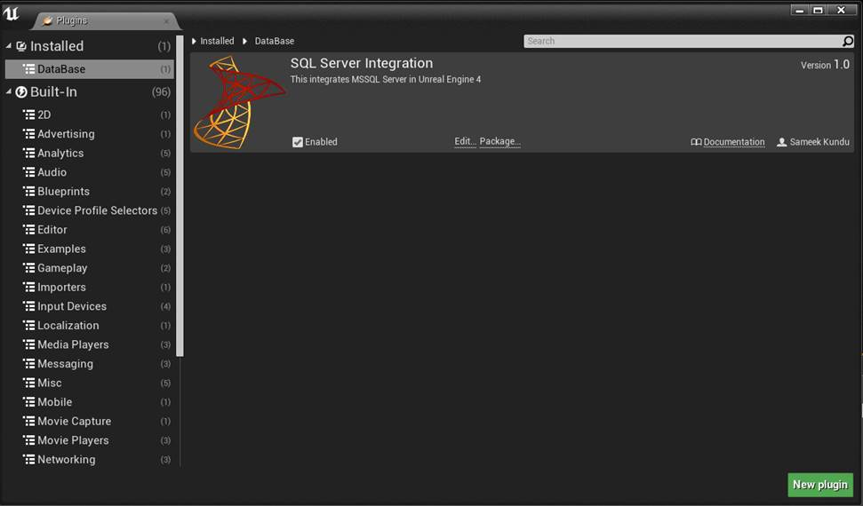
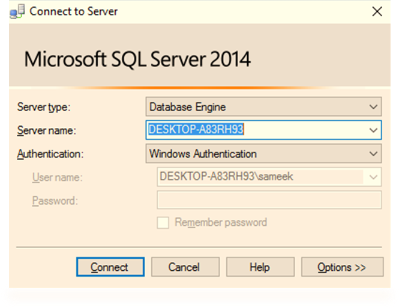
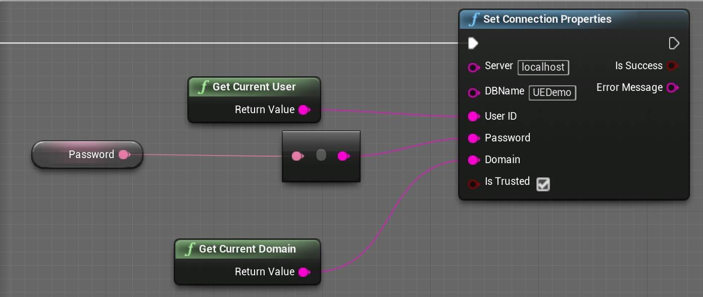
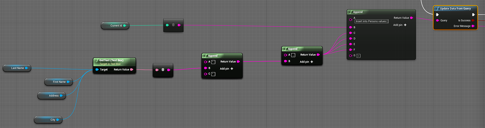
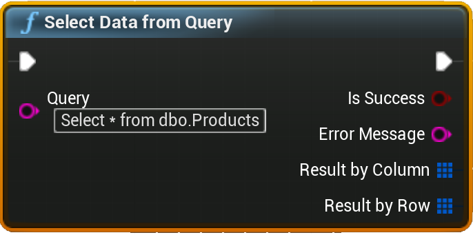
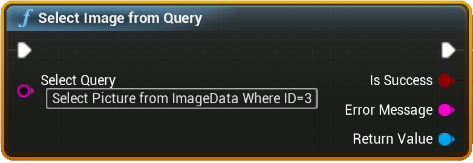

MS-SQL Integration is a plugin that lets you connect to your SQL Server database, and store and retrieve data from the server via SQL queries, directly from the Blueprint. This plugin brings the power of C#.NET in Unreal Engine 4.
If you have worked with MS SQL Server, you must be very familiar to Select, Update, Insert and Delete SQL queries, joins and sub-queries. If you know C#.Net, and worked with ADO.Net, you must be knowing how to set Connection properties for your SQL Server, and how to write and execute your SQL Queries within your .NET application.
But now you can use Blueprints in Unreal Engine 4 to do your job. You are still writing the same queries that you are familiar with, but here you are writing it within Blueprints, which gives you flexibility to store and retrieve data as well as Images from your SQL Server to your UE4 projects.
To get started, first ensure that the plugin is installed, by visiting the Plugin Window, as shown below:
If you are not familiar with SQL Server at all, you will get plenty of online resources to get you started, and you can definitely test it out by downloading the free version, SQL Server Express.
SQL Server Express is an entry level database server having a limitation of 10 GB size, which is perfect from small scale applications.
Here I will be explaining you in details how to set up your database connection and how to write and execute SQL queries from UE4.
Working with SQL Server Express
If you already have your database and tables ready to be integrated with your UE4 project, you may skip this section.
Assuming that you have your database server up and running, either locally or remotely, to get started working with this plugin, you first need to create a database and a table in your server, where you would like to store all your in-game data.
If you are unsure regarding how to work with SQL Express, let me quickly walk you through the basic steps.
-
Download and install SQL Server Express edition from the below link:
-
Open your SQL Server client and connect to your database server by using Windows Authentication or SQL Server authentication
By default, you will get a local DB server called locahost, which will be saved in your local machine. To create a dedicated server, please go through the steps given in the below link:
https://docs.microsoft.com/en-us/azure/sql-database/sql-database-get-started
To understand how to create a login, please visit the below link:
-
Once your database is created, it should be visible in object explorer, within Databases.
Right click on your database name, and open New Query Window. Then create one or more tables, which you want to use for storing and retrieving your game data. Below is a simple query that lets you create a table called Products. (Source - https://msdn.microsoft.com/en-us/library/ms365315.aspx)
CREATE TABLE dbo.Products
(
ProductID int PRIMARY KEY NOT NULL,
ProductName varchar(25) NOT NULL,
Price money NULL,
ProductDescription text NULL
)
Setting Up Database Connection in UE4
Before we begin writing our SQL queries and executing them in our database, we first need to set up a connection within UE4. This is a onetime setup, and is similar to how we manually connect to our DB Server using Windows or SQL Server Authentication, as shown in the above steps.
Authentication Modes
To set up a DB Connection, we either need to use Windows Authentication mode or SQL Authentication mode.
Windows Authentication mode authenticates users to use the Database server via Windows Login ID and Password.
SQL Server Authentication mode uses logins that are created and stored in SQL Server and are not based on Windows user accounts. Here you need to explicitly enter both your SQL Server ID and password, while setting up the connection property.
To learn about Authentication modes in detail, you can refer to the below link:
SQL SERVER CONNECTION
To connect to the SQL Server, we first need to set the connection properties. For that, we need to call the function Set Connection Properties, which forms a valid connection string that will later be used to access the given database. If you are using Windows Authentication, you don’t need to enter Used ID or Password.
Forming the Connection String
A connection string typically looks like:
Server=myServerAddress;Database=myDataBase;User Id=myUsername;Password=myPassword;
The Server property is not limited to any particular SQL Server type and can accept different string formats, as shown below.
tcp:hostname
tcp:hostname, portNumber
To learn about various types of Connection String and forming the one that best suits your requirement, you can refer to the below link:
https://www.connectionstrings.com/sql-server/
So if your connectionstring consists of extra parameters , apart from the usual parameters included in the Set Connection Properties function(Server , DBName , UserID , Password , IsTrusted) , you can enter those extra parameters in the Server input, seperated by a semicolon. For example , if your connectionstring is something like :
Server=.\SQLExpress;AttachDbFilename=C:\MyFolder\MyDataFile.mdf;Database=dbname;Trusted_Connection=Yes;
Then you need to enter , in your Server input , .\SQLExpress;AttachDbFilename=C:\MyFolder\MyDataFile.mdf
Writing SQL queries within UE4 Blueprints
Once the connection property has been set, you can now start forming your SQL queries. Forming queries can be categorized in two types, queries that modify data to the database (INSERT, UPDATE, DELETE), or the queries that fetch data from the database (SELECT). We will discuss these two categories one by one.
Let us say we have a created a table in our database called Products by using the below query:
CREATE TABLE dbo.Products
(
ProductID int PRIMARY KEY NOT NULL,
ProductName varchar(25) NOT NULL,
Price money NULL,
ProductDescription text NULL
)
GO
We will take this table as a reference to form our queries and discuss the two categories of query formation.
UPDATE QUERIES
To modify data in our table Products, we will use the function Update data from Query which takes a string input where we have to enter our query and executes the query in the database.
A typical way of forming a simple Insert query is shown below.
SELECT QUERIES
To bring the data from SQL Server to your game, you need to call the function Select data from Query. This will take your select query as a string input.

This will return an array of structured variable called
This will return an array of structured variable called
ColumnName
ColumnName contains the header name of the column of the current instance of our initial array that we get by executing our select query. If you want to display data of a specific column, you can use this variable to match the column name.
ColumnData
ColumnData is an array of string consisting of all the elements of a given column. So you can easily set up a for-loop here to get all the elements of a particular column iteratively.
Storing and Retrieving Images from SQL Server
If you have expertise in SQL Server, chances are you are very much familiar with working with ImageType data that helps in storing and retrieving images from SQL Server. In this section, we talk about how we can work with ImageType in UE4.
To work with images, we first need to create one table in the database that has an ImageType datatype. Let us assume we have created such a table, by executing the below query.
CREATE TABLE [dbo].[ImageData]
(
[ID] [int] IDENTITY (1,1) NOT NULL ,
[Picture] [image] NULL
)
ON [PRIMARY] TEXTIMAGE_ON [PRIMARY]
UPDATE IMAGES
To save an image to our table, we first need to browse for an image from our desktop. As of now, you cannot directly save UE4 Textures to your database. Instead, you can directly browse for an image of common types via Blueprints, by calling the function called Browse File.

This function will bring up a File Browser dialogue. On selecting the image file and clicking OK, the dialogue box will close and the function returns the file path. You may have your separate ways of retrieving image path from your hard drive, so this function is pretty much optional.
Once we have our image file path, we need to fire the function called Update Image from Query that will update the image to the server.

Here we enter our query. So if we want to insert an image in our Picture column, we need to enter it like this:
INSERT INTO ImageData( Picture)
VALUES (@img)
If we want to insert values in other columns, we can do that as well.
INSERT INTO ImageData( ID , Picture)
VALUES (0, @img)
SELECT IMAGES
To select an image from SQL Server, we simply need to call the function called Select Image from Query and enter our selection query here.
You need to remember that you can select only one image at a time, so make sure your selection query only fetches a single image and nothing else. For example, when your table has a multiple rows, you cannot write Select Picture from ImageData as that will fetch multiple values. Instead, you need to write something like Select Picture from ImageData Where ID=3.
This function returns a Texture2D format, which you can use to display the image in your game.